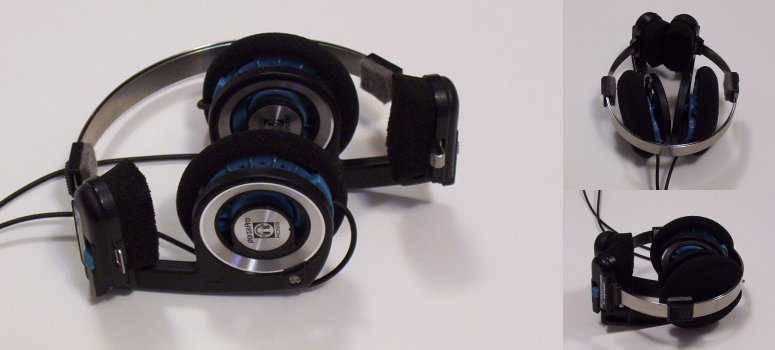
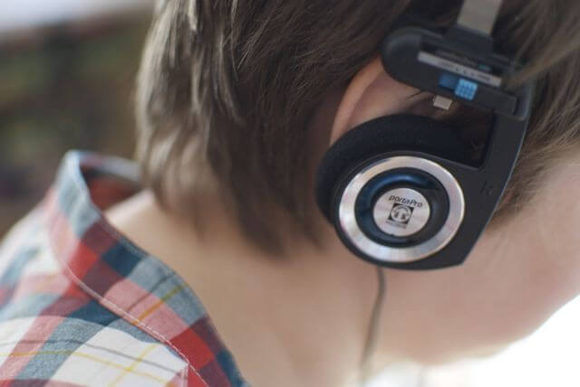
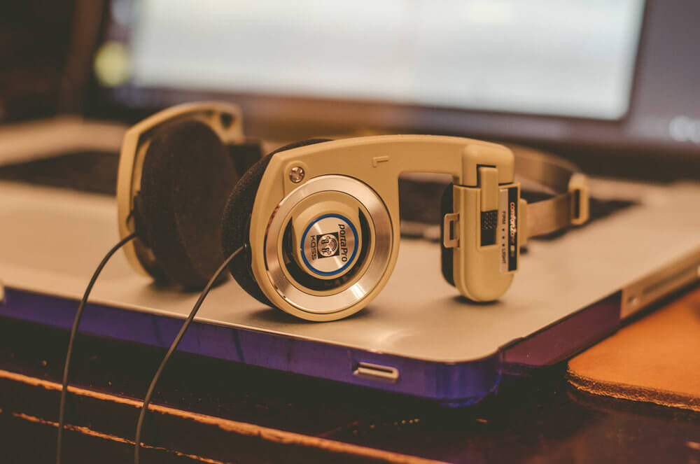

Koss Porta Pro: The best headphone of the 80s

The original Porta Pro hit shelves when I was ten or so. Maybe twelve. I had just got into headphones and had a wad of cash from my lawn mowing “business” burning a hole in my mind. I wanted headphones. No, I wanted Porta Pros. The thing is, I couldn’t quite afford them. Radio Shack had an RCA-branded imitation that said something like “Guaranteed to be as good as Koss Porta Pro”. I fell for it.
By the time I buffed up my ego enough put out for a pair of portable phones, I had moved into the urbane world of earphones and two channel home audio. Of course, as a just-about-twenty-something that lived still with his parents, the speakers never got a chance to really throb. Enter Audio Technica’s newly minted Air Dynamic phones, which I picked up for about 200 bones whilst visiting Tokyo.
So, my first Koss Porta Pro landed in my hands in the late 90’s after I had already enjoyed a pretty awesome headphone. But it was the headphone I had wanted to start with- and was so much better than the imitation. And even next to my Audio Technica’s, it was in no way second tier.
I used the hell out of the Pros. My day job was general construction, and my generally steady hands got made the manager of painting. I had a white-man’s afro- tipped with Lookout Point 1646. While the Porta Pro was a great companion for the painter, it was not a good fro companion. Every day, it yanked away like fifteen of my curlies (later which I would discover were escaping of their own volition, and fast).
Painting is a tough job for an insomniac. Before strapping my ears with the Porta Pro’s bombastic bass, I had fallen asleep whilst working. After Porta Pro, and especially, given that that bass brings new meaning to the phrase rattle and hum, promotion wasn’t far away.
Build
The fact they look like they are from the 1980s is precisely because they are. Koss introduced the design in 1984, and their longevity is testament to their sonic performance – this wasn’t always the trendiest of looks.
The design keeps them lightweight, ideal for commuting or using while you exercise. You can toggle between a light or firm fit – though firm does not mean clamped – as well as collapse them down to fit tidily in your bag.
The only potential concern regarding the Porta Pros’ design is that they’re pretty much open backed, meaning you may have to dial down the Europop if you don’t want your embarrassing tunes to be heard by the whole room.
Sound
Everything pertinent to build and design you could essentially glean from looking at a photo, though; what we’re really here to tell you is how great these headphones sound for such a tiny sum of money.
It’s seemingly the most difficult aspect of a presentation to get right – considering just how many products at all prices we hear getting it wrong – but timing is absolutely these Porta Pros’ forte, and the rhythms they deal are done so with an infectious vivacity.
There’s also a surprising amount of bass weight, without skewing or muddying the balance, and while their treble is perhaps not the sweetest we’ve ever heard, it is far from coarse or distracting.
That isn’t to say these headphones shine only when presenting upbeat tracks. Dynamic range is eternally entwined with rhythmic sensibility, and the Porta Pros are able to detail expression just as they are driving a beat.
It’s the kind of sensitivity that, while not perhaps hi-fi ready, elevates them beyond the realm of ‘they’ll do’ and into that in which they could happily be our main headphones for on-the-go listening.
Verdict
If you want a cheap pair of frills-free headphones that get to the nub of a performance, the Koss Porta Pros are a product we can fully get behind, and have a lot of fun while doing so. Do it. Today, Porta Pro can be had for chump change. It is every bit as good as it was when grunge was cool. And that won’t change anytime soon. Every headphone fan should own a pair. I’m on my second now, and looking to start a club.